神经元
神经网络(Neural Network)的起源可以追溯到20世纪40年代，沃伦·麦卡洛克(Warren McCulloch)和沃尔特·皮茨(Walter Pitts)两位学者提出了MP神经元，这一数学模型模仿了生物神经元的激活模式。
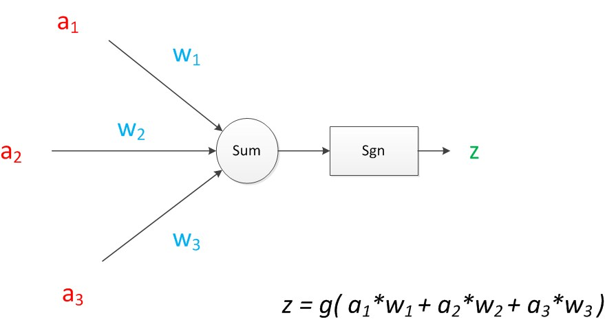 $$ z = g(a_1 * W_1 + a_2 * W_2 + a_3 * W_3) $$$$ \text{sgn}(x) = \begin{cases} 1, & x \geq 0 \\ 0, & x < 0 \end{cases} $$其中的x表示加权输入的总和，当输入总和$\geq0$时，神经元输出1(被激活)，否则输出0(未激活)。
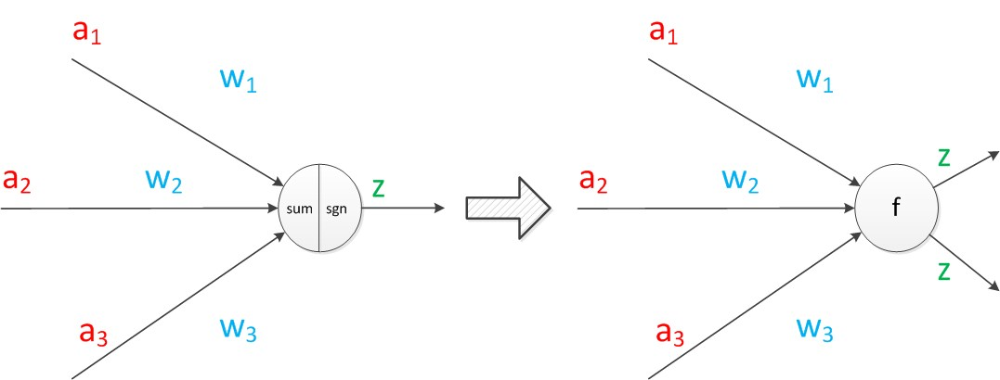将sum、sgn绘制在一起表示神经元的内部计算。单个神经元可以引出多个相同值的有向箭头。
神经元模型的目标是什么？
神经元的目标是学习一个最优的计算规则，让输入数据经过它后，能尽可能准确地预测输出。
可以将神经元视作一个决策器，比如决定今天是否要带伞：
- 输入：天气预报的温度、湿度、云量、风速等；
- 权重：不同特征对决策的影响程度；
- 计算(加权求和+激活)：综合所有信息后，决定是否带伞；
- 输出：最终决定(如 1=带伞，0=不带伞)。
局限性
在前面的内容中可以发现，这一方法存在一些局限性：
- 只支持二值输出：由于使用符号函数进行决策，神经元的输出为0或1；
- 无法处理非线性问题：sgn函数是线性的，它只会根据加权和是否大于0来判断；
- 不能自我学习：所有权重和阈值均需要人工设计。
单层感知机 (单层神经网络)
1958年，Frank Rosenblatt提出了感知机模型，通过引入学习算法，使得神经网络能够通过训练调整权重，而无需人工设计。
感知机的目标是通过不断调整权重，使模型能够更好地预测或分类。
在神经元模型的“输入”位置添加神经元节点，标志其为“输入单元”。
感知机中有两个层次，分别是输入层和输出层。输入层里的“输入单元”只负责传输数据，不做计算；输出层里的“输出单元”则需要对前面一层的输入进行计算。
其中，$a=[a_1,a_2,a_3]^T$；$z=[z_1,z_2]^T$；W为2行3列的矩阵。
感知机是如何训练的？
$$ f(x) = sign(w^T·x+b) $$$$ sign(x) = \begin{cases} +1, & x \geq 0 \\ -1, & x < 0 \end{cases} $$感知机的几何解释：线性方程$w·x+b=0$对应于特征空间中的一个超平面$S$，其中$w$是超平面的法向量，$b$是超超平面的截距，这个超平面将特征空间划分为正负两部分：
- 当$w^T·x_i+b\geq0$时，$y_i=+1$；
- 当$w^T·x_i+b<0$时，$y_i=-1$；
其中，$\eta (0<\eta\leq 1)$为步长(学习率)。
什么是梯度？
$$ \nabla_\theta L = (\frac{\partial L}{\partial \theta_1}, \frac{\partial L}{\partial \theta_2}, ..., \frac{\partial L}{\partial \theta_n}) $$$$ \theta \leftarrow \theta-\eta\nabla_\theta L $$单层感知机代码
|
|
局限性
单层感知机只能处理可以通过一条直线(或超平面)分开的数据。非线性问题(如异或问题)就无法解决。
多层感知机 (多层神经网络)
单层神经网络无法解决非线性问题(如异或问题)，但如果增加一个计算层，通过多次非线性映射，输入数据就可以被映射到更高维的特征空间，从而解决非线性可分问题。这个增加的计算层被称为隐藏层。增加的隐藏层由图中黄色的块表示：
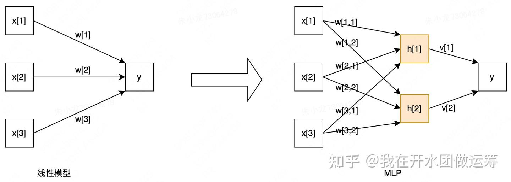 $$ h_1 = f(w_{1,1}*x_1 + w_{2,1}*x_2 + w_{3,1}*x_3 + b_1) $$$$ h_2 = f(w_{1,2}*x_1 + w_{2,2}*x_2 + w_{3,3}*x_3 + b_2) $$$$ y = v_1*h_1 + v_2*h_2 + b $$如果$f(·)$是线性的，增加了隐藏层的多层感知机本质上还是一个线性模型。而多层感知机的目的是让模型可以处理非线性问题，因此，这里的$f(·)$需要使用非线性函数。
为什么使用非线性激活函数就可以增强模型能力？
任意非线性函数都可以通过多个分段线性函数的组合来进行近似和表示。而在多层感知机中，激活函数(如ReLU、sigmoid等)帮助神经网络实现了这种分段线性变换，从而使得它可以拟合任意的非线性关系。
然而，多层神经网络需要处理多个层次的权重和偏置，在每一层之间进行矩阵乘法和激活函数的非线性变换。随着网络深度的增加，计算复杂度呈指数级增长。
1986年，Rumelhar和Hinton等人提出了反向传播(Backpropagation，BP)算法，解决了两层神经网络所需要的复杂计算量问题。反向传播的核心思想是通过计算损失函数相对于网络各个参数的梯度，来更新神经网络中的权重和偏置，从而使得网络在训练过程中最小化损失。
链式法则
对于$f(g(x))$，导数为：$\frac{df}{dx} = \frac{df}{dg}·\frac{dg}{dx}$
前向传播
$$ h = \sigma(z_1) $$$$ z_1 = w_1x+b_1 $$$$ y = z_2 $$$$ z_2 = w_2h+b_2 $$$$ L = \frac{1}{2}(y-t)^2 $$反向传播
$$ \frac{\alpha L}{\alpha y} = y-t $$$$ \frac{\alpha L}{\alpha w_2} = \frac{\alpha L}{\alpha y}·\frac{\alpha y}{\alpha w_2} = (y-t)·h^T $$$$ \frac{\alpha L}{\alpha b_2} = \frac{\alpha L}{\alpha y}·\frac{\alpha y}{\alpha b_2} = y-t $$$$ \frac{\alpha L}{\alpha h} = \frac{\alpha L}{\alpha y}·\frac{\alpha y}{\alpha h} = (y-t)·W_2^T $$$$ \frac{\alpha L}{\alpha z_1} = \frac{\alpha L}{\alpha h}·\frac{\alpha h}{\alpha z_1} = \frac{\alpha L}{\alpha h}·\sigma'(z_1) $$$$ \frac{\alpha L}{\alpha w_1} = \frac{\alpha L}{\alpha z_1}·\frac{\alpha z_1}{\alpha w_1} = \frac{\alpha L}{\alpha z_1}·x^T $$$$ \frac{\alpha L}{\alpha b_1} = \frac{\alpha L}{\alpha z_1}·\frac{\alpha z_1}{\alpha b_1} = \frac{\alpha L}{\alpha z_1} $$$$ \frac{\alpha L}{\alpha w_l} = \frac{\alpha L}{\alpha z_l}·\frac{\alpha z_l}{\alpha w_l} $$$$ \frac{\alpha L}{\alpha b_l} = \frac{\alpha L}{\alpha z_l}·\frac{\alpha z_l}{\alpha b_l} $$其中，$w_l$、$b_l$是第$l$层的参数；$z_l$为第$l$层的输入(未激活)；$\frac{\alpha L}{\alpha z_l}$是对第$l$层输入的梯度。
多层感知机代码
|
|
激活函数
在前面的内容中，我们多次提到了激活函数这个概念。激活函数在隐藏层和输出层增加了非线性操作，允许网络复制复杂的非线性行为，从而帮助网络学习数据中的复杂模式、提升表达能力。
由于绝大多数神经网络都是借助某种形式的梯度下降进行优化，因此激活函数需要是可微分(或者至少是几乎完全可微分的)。
下面简单介绍一些常用的激活函数。
优点
- 由图可以看出，Sigmoid函数的值域为[0,1]，输出范围有限，优化稳定，可以用作输出层，例如用于表示二分类的类别或者用于表示置信度。
- 该函数是连续可导的，可以提供非常平滑的梯度值，防止模型训练过程中出现突变的梯度(即避免跳跃的输出值)。
缺点
- 导数的最大值只有0.25，网络越深，多个0.25相乘，梯度逐渐趋近于0，反向传播时其权重几乎得不到更新，从而使得模型变得难以训练，这就是梯度消失问题。
- 其输出不是以0为中心而是全大于0的(这会降低权重更新的效率)，下一层的神经元会得到上一层输出的全正信号作为输入，因此Sigmoid激活函数一般放在最后的输出层中使用。
- 指数运算耗时。
优点
- Softmax将输出转化为概率，所有输出的值都在[0, 1]之间，并且所有类别的概率之和为1，适合多分类任务。
- 经过使用指数形式的Softmax函数能够将差距大的数值距离拉的更大。这有助于神经网络模型在进行多分类时区分不同类别的相对优先级。
缺点
- 需要对所有类别的指数求和，这在类别数很大的时候会导致较高的计算开销。
- 在输出层，Softmax函数的梯度非常依赖于模型的输出。当某个类别的输出远大于其他类别时，梯度会变得非常小，导致梯度消失问题。
- 容易受到异常值的影响，尤其是在某些类别的得分非常大的时候。一个非常大的输入值可能会导致Softmax输出的概率几乎集中在一个类别上，从而影响其他类别的学习。
Sigmoid与Softmax的区别
-
Sigmoid适用于二分类问题 或多标签分类问题，输出为单一的概率值(通常为每个类别的独立概率)，而不是多个类别的相对概率分布。
-
Softmax适用于多分类问题，它将输出转换为概率分布，并且确保所有类别的概率之和为 1。
(3) Tanh激活函数
$$ tanh(x) = \frac{e^x-e^{-x}}{e^x+e^{-x}} $$$$ tanh'(x) = \frac{4}{(e^x+e^{-x})^2} = 1-[tanh(x)]^2 $$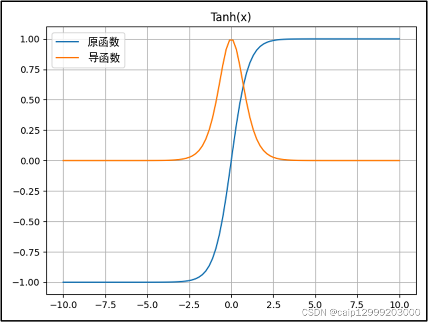优点
- 值域为[-1, 1]，对称中心在原点，解决了Sigmoid激活函数输出不以0为中心的问题。
- 可以用于隐藏层。
缺点
- 在两边与Sigmoid一样有梯度趋近于0的问题。
- 存在梯度消失问题。
- 同样需要进行指数计算。
(4) ReLU激活函数
$$ f(x) = \begin{cases} x, & x \geq 0 \\ 0, & x < 0 \end{cases} $$$$ f'(x) = \begin{cases} 1, & x \geq 0 \\ 0, & x < 0 \end{cases} $$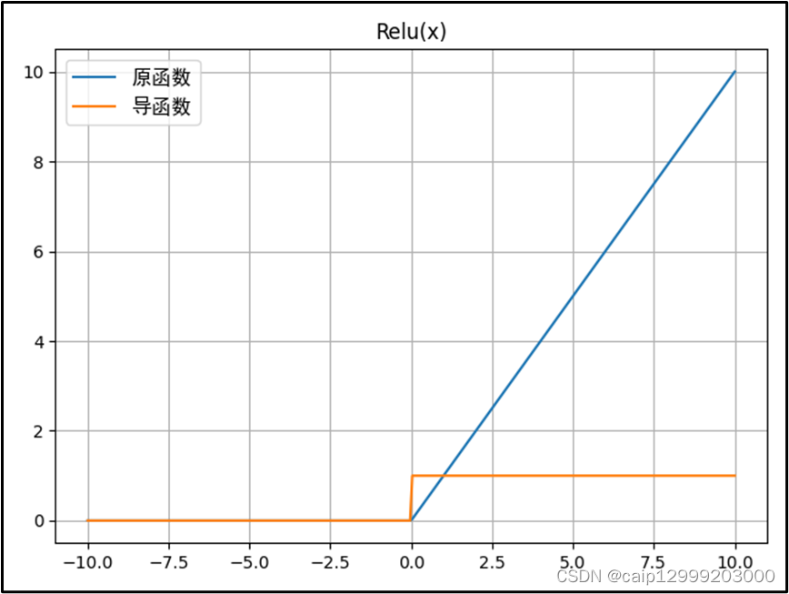优点
- 正输入时是线性的，收敛速度快(梯度恒为1)，计算速度快。且当输入为正时，由于导数是1，能够完整传递梯度，不存在梯度饱和、梯度消失的问题。
- 无论是函数还是其导数都不包含复杂的数学运算，计算复杂度低，只需要一个阈值就可以得到激活值，收敛速度比sigmoid和tanh更快。
- ReLU会使一部分神经元的输出为0，这样就造成了神经网络的稀疏性，并减少了参数的相互依存关系，缓解了过拟合问题的发生。
缺点
- 输入为负时，输出为0，梯度也为0，相当于神经元直接死亡(Dead Neuron)，而且不会复活，这可能导致特征的学习不充分。
- 与Sigmoid一样，其输出不是以0为中心的。
(5) Leaky ReLU激活函数
$$ f(x) = \begin{cases} x, & x \geq 0 \\ \lambda x, & x < 0 \end{cases}, \lambda \in (0, 1) $$$$ f'(x) = \begin{cases} 1, & x \geq 0 \\ \lambda, & x < 0 \end{cases}, \lambda \in (0, 1) $$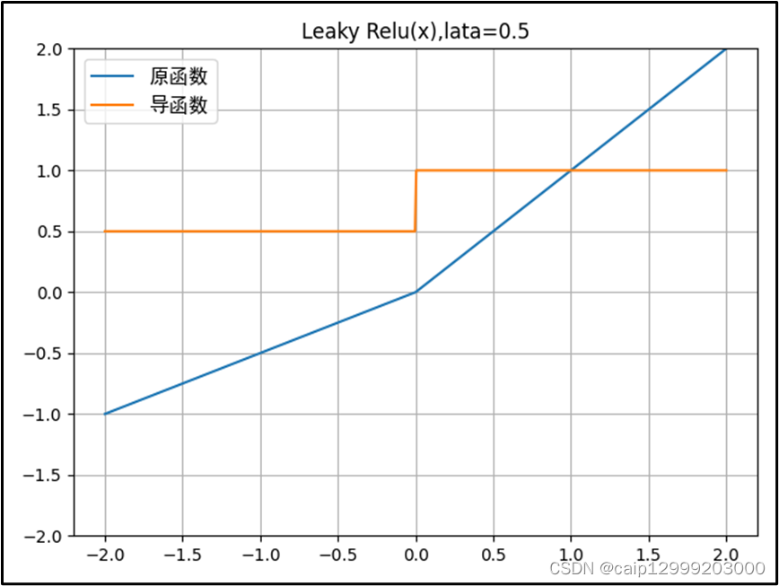优点
通过在负半轴添加一个小的正斜率，使得负轴的信息不会全部丢失，以此解决神经元死亡的问题。
缺点
- 超参数$\lambda$需要人为设定，但不同任务可能需要不同的最佳$\lambda$，增加了超参数调优的复杂度。
- 当输入值较大时，Leaky ReLU仍可能导致梯度爆炸，需要配合Batch Normalization或其他正则化方法。
- 在实际操作中，尚未完全证明Leaky ReLU总是比ReLU更好。
(6) PReLU激活函数
$$ f(x) = \begin{cases} x, & x \geq 0 \\ \alpha x, & x < 0 \end{cases} $$$$ f'(x) = \begin{cases} 1, & x \geq 0 \\ \alpha, & x < 0 \end{cases} $$参数α通常为0到1之间的数字，并且通常相对较小:
- 如果$𝛼 = 0$，则$f(x)$变为ReLU。
- 如果$𝛼 > 0$，则$f(x)$变为Leaky ReLU。
- 如果$𝛼$是可学习的参数，则$f(x)$为PReLU。
优点
- 与Leaky ReLU类似，PReLU在负值域也有一个相对较小的斜率，可以避免Dead ReLU问题。
- 公式与Leaky ReLu相似，但并不完全一样。$𝛼$可以是常数，或自适应调整的参数。也就是说，如果让$𝛼$自适应，那么PReLu会在反向传播时更新参数$𝛼$。因此在不同数据集上，PReLU通常比Leaky ReLU更稳定。
缺点
- PReLU让每个神经元都学习一个额外的参数$𝛼$，这会增加模型的自由度，导致模型在小数据集上可能过拟合。
- 在某些简单任务中，ReLU已经足够有效，而PReLU的额外参数反而可能带来不必要的复杂度。
(7) RReLU激活函数
$$ f(x) = \begin{cases} x, & x \geq 0 \\ \alpha x, & x < 0 \end{cases} $$$$ f'(x) = \begin{cases} 1, & x \geq 0 \\ \alpha, & x < 0 \end{cases} $$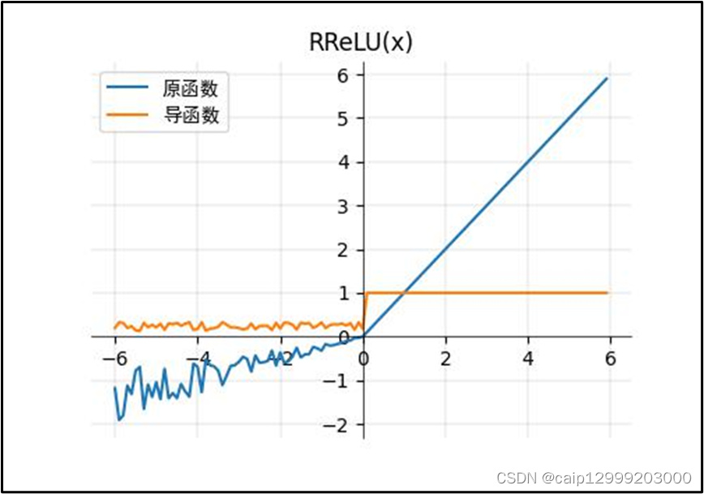优点
- 与Leaky ReLU类似，RReLU在负半轴保持非零梯度，避免ReLU的神经元死亡问题。
- 训练时随机选取$\alpha$，可以一定程度上减少过拟合，提高模型的泛化能力。
缺点
- 参数$𝛼$取值随机，训练过程中模型参数的更新方向可能会有所波动，在某些任务上可能会影响收敛速度。
- 在测试时使用固定的$𝛼$(取均值)，而训练时是随机的，可能导致模型表现略有偏差。
(8) ELU激活函数
$$ f(x) = \begin{cases} x, & x \geq 0 \\ \alpha (e^x-1), & x < 0 \end{cases} $$$$ f'(x) = \begin{cases} 1, & x \geq 0 \\ \alpha e^x, & x < 0 \end{cases} $$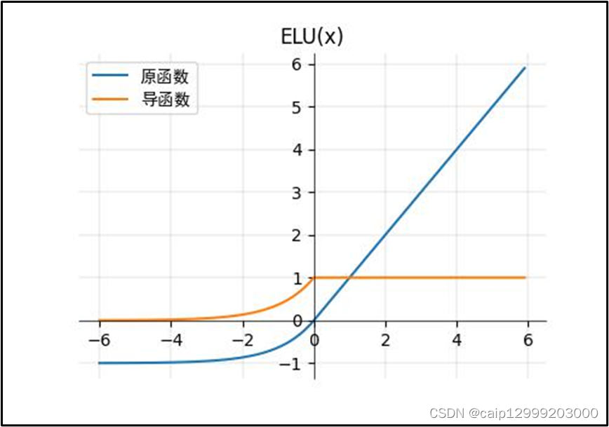优点
- ELU在负值时是一个指数函数，具有软饱和特性，对噪声更鲁棒，抗干扰能力强；在较小的输入下会饱和至负值，从而减少前向传播的变异和信息。
- 右侧线性部分使ELU能够缓解梯度消失。
- ELU的输出均值接近于0，收敛速度快。
缺点
- 在输入为负时需要进行指数计算，计算稍复杂。
- $\alpha$参数需要额外调整。
(9) SELU激活函数
$$ f(x) = \lambda\begin{cases} x, & x > 0 \\ \alpha (e^x-1), & x \leq 0 \end{cases} $$$$ f'(x) = \begin{cases} \lambda, & x > 0 \\ \lambda \alpha e^x, & x \leq 0 \end{cases} $$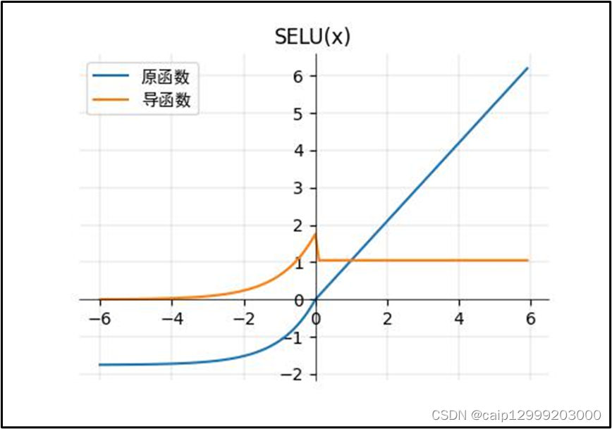优点
- SELU具有自归一化的特性，这使得网络的每一层的输出会在训练过程中保持均值为0，方差为1，从而减轻了梯度消失和梯度爆炸问题。让网络自动保持输入分布的一致性，避免额外的Batch Normalization或Layer Normalization操作保持输出层的稳定。
- 内部归一化比外部归一化更快，这使得网络收敛得更快。且每一层的激活函数输出不再依赖于外部约束，减少了对优化器的依赖。
- 负值范围通过指数函数保持非零梯度，防止了梯度消失。
缺点
- SELU本身已经具备了自归一化特性，它不适合与Batch Normalization结合使用。如果同时使用BN，可能会破坏其自归一化能力。
- SELU的指数部分在负值区域导致输出非常小，可能会导致过度的稀疏性。类似神经元长时间“死亡”。
(10) CELU激活函数
$$ f(x) = \lambda\begin{cases} x, & x > 0 \\ \alpha (e^\frac{x}{\alpha}-1), & x \leq 0 \end{cases} $$$$ f'(x) = \begin{cases} 1, & x > 0 \\ e^\frac{x}{\alpha}, & x \leq 0 \end{cases} $$优点
- CELU在负区间使用了平滑的指数函数，梯度更连续、平滑。
- 对负值区间的指数部分进行平滑处理，避免了激活值快速增大的问题，不容易引起梯度爆炸。
- 负值范围输出非零梯度，防止了梯度消失。
- 这种平滑的激活函数使得训练更稳定，有助于深度神经网络的收敛。
缺点
- 在面对复杂的非线性问题时。过度平滑可能会限制网络学习到更复杂的特征表示，从而影响网络的表达能力。
- 与ELU一样具有自归一化特性，与BN不完全兼容。
- CELU的表现依赖于超参数$\alpha$，该参数控制了负区间的输出。
(11) GELU激活函数
$$ GELU(x) = 0.5x(1+tanh(\sqrt{\frac{2}{\pi}}(x+0.044715x^3))) $$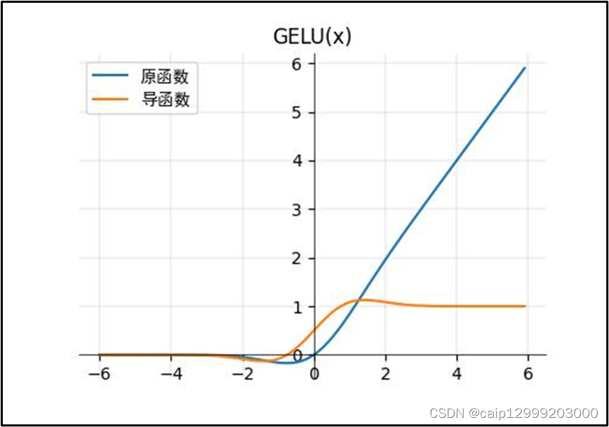优点
- 当方差为无穷大，均值为0的时候，GeLU就等价于ReLU了。GELU可以当作为RELU的一种平滑策略。GELU是非线性输出，具有一定的连续性。
- 负值范围输出非零梯度，防止了梯度消失。
- GELU利用高斯误差函数(误差函数与标准正态分布密切相关)，对输入进行概率化变换，这种特性有助于神经网络学习更加复杂和非线性的模式。
缺点
GELU的优势主要体现在深度神经网络中，对于较浅的网络，ReLU等激活函数可能已经足够好。使用GELU可能无法提供显著的性能提升，反而由于计算开销的增加，可能会降低网络的训练和推理效率。
(12) Swish激活函数
$$ f(x) = x·\sigma(\beta x) $$$$ f'(x) = xf(\beta x)(1-f(\beta x)) + f(\beta x) $$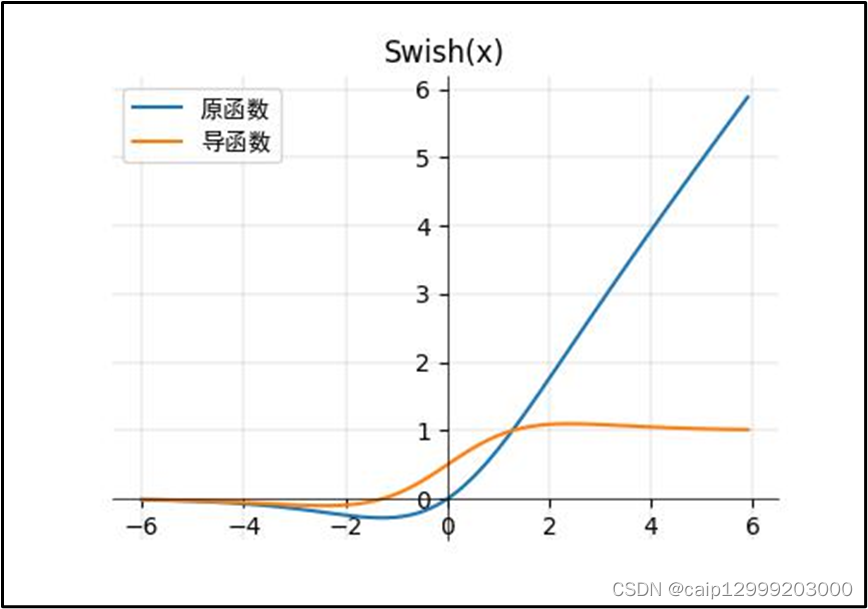优点
- 和ReLU一样，没有上边界，因此不会出现梯度饱和的现象(避免过拟合)。
- 有下边界，可以产生更强的正则化效果(x左半轴慢慢趋近0)。
- 连续可导，且在整个输入空间中具有平滑的过渡，使Swish能够更好地保持梯度信息，并且在训练时能更好地传播梯度，帮助深度神经网络更有效地学习复杂的特征。
- 自门控特性，即函数的输出由输入的本身和经过Sigmoid变换后的输入共同决定。这使得Swish在网络的每一层都能根据输入的特征来动态地调整激活函数的“门控”程度，从而更适应输入的不同情况。
缺点
- Swish的优势主要体现在深度神经网络中，特别是在处理更复杂的特征时。在一些浅层网络上，Swish可能不会比其他激活函数(如 ReLU或Sigmoid)带来显著的性能提升。
- 由于其涉及到Sigmoid函数的计算，Swish的计算效率不如ReLU，在推理时的延迟可能较高。
(13) SwiGLU激活函数
$$ SwiGLU(x) = Swish(x)·\sigma (Wx+b) $$其中，$Swish(x)=x·\sigma (x)$，即Swish激活函数；$\sigma(Wx+b)$是Sigmoid门控函数，控制激活值的开关。
优点
- 结合了Swish和GLU的特性，具有非线性表示能力 和门控机制。
- 在深度神经网络中，能够加速训练收敛，并提高梯度流动和信息传播效率。
- 通过门控机制避免了梯度爆炸和梯度消失问题，增强了训练稳定性。
- 具有平滑的激活函数，能学习更加复杂的模式。
缺点
- 计算开销相对较大，计算复杂性较高。
- 不适合浅层网络。
梯度消失和梯度爆炸
在前面激活函数的介绍中我们多次提到了梯度消失和梯度爆炸的概念，下面再对其概念和解决方法做一下总结。
梯度消失
当反向传播层数逐渐增多，由于每一层都对前一层梯度乘以了一个小数，因此随着反向传播，梯度逐层减小，导致靠近输入层的权重更新极慢甚至停止更新，网络难以学习到有效的特征。
解决方案：
- 选择合适的激活函数，如ReLU(大于0时导数为1)、Leaky ReLU(在ReLU能力上避免了神经元死亡问题)、ELU(保持ReLu有时的同时解决Dead ReLU问题)等。
- 采用ResNet残差连接，通过“跳跃连接”直接把输入传递给后续层，使得梯度可以绕过某些层，解决梯度消失问题，使得网络可以训练非常深。
- 适当的权重初始化：Xavier初始化/He初始化，防止梯度在传播过程中过大或过小。
- 使用Batch Normalization/Layer Normalization。
梯度爆炸
随着误差反向传播，梯度值逐层增大，导致靠近输入层的权重更新过大，从而使模型训练变得不稳定，甚至梯度数值溢出(NaN)。其原因是初始权重过大，导致梯度不断放大
解决方案：
- 梯度裁剪，即设定一个剪切阈值，当梯度过大时，将其限制在一定范围。
- 采用L2正则化约束权重大小，防止梯度过大。
- 适当的权重初始化：Xavier初始化/He初始化，防止梯度在传播过程中过大或过小。
- 使用Batch Normalization/Layer Normalization。
权重初始化的具体方法、Normalization、正则化、优化器我们在下章再详细介绍。
Reference
[1] https://blog.csdn.net/illikang/article/details/82019945?ops_request_misc=%257B%2522request%255Fid%2522%253A%2522b8ddfd309f99fabf168aaa1b10b4063a%2522%252C%2522scm%2522%253A%252220140713.130102334..%2522%257D&request_id=b8ddfd309f99fabf168aaa1b10b4063a&biz_id=0&utm_medium=distribute.pc_search_result.none-task-blog-2~all~top_positive~default-1-82019945-null-null.142^v102^pc_search_result_base9&utm_term=%E7%A5%9E%E7%BB%8F%E7%BD%91%E7%BB%9C&spm=1018.2226.3001.4187
[2] https://blog.csdn.net/seasonsyy/article/details/136124829?ops_request_misc=%257B%2522request%255Fid%2522%253A%2522e47868d831ef55e9c4b37db9be731232%2522%252C%2522scm%2522%253A%252220140713.130102334..%2522%257D&request_id=e47868d831ef55e9c4b37db9be731232&biz_id=0&utm_medium=distribute.pc_search_result.none-task-blog-2~all~sobaiduend~default-1-136124829-null-null.142^v102^pc_search_result_base9&utm_term=%E6%84%9F%E7%9F%A5%E6%9C%BA%E8%AE%AD%E7%BB%83&spm=1018.2226.3001.4187
[3] https://blog.csdn.net/illikang/article/details/82019945?ops_request_misc=%257B%2522request%255Fid%2522%253A%2522b8ddfd309f99fabf168aaa1b10b4063a%2522%252C%2522scm%2522%253A%252220140713.130102334..%2522%257D&request_id=b8ddfd309f99fabf168aaa1b10b4063a&biz_id=0&utm_medium=distribute.pc_search_result.none-task-blog-2~all~top_positive~default-1-82019945-null-null.142%5Ev102%5Epc_search_result_base9&utm_term=%E7%A5%9E%E7%BB%8F%E7%BD%91%E7%BB%9C&spm=1018.2226.3001.4187https://blog.csdn.net/illikang/article/details/82019945?ops_request_misc=%257B%2522request%255Fid%2522%253A%2522b8ddfd309f99fabf168aaa1b10b4063a%2522%252C%2522scm%2522%253A%252220140713.130102334..%2522%257D&request_id=b8ddfd309f99fabf168aaa1b10b4063a&biz_id=0&utm_medium=distribute.pc_search_result.none-task-blog-2~all~top_positive~default-1-82019945-null-null.142%5Ev102%5Epc_search_result_base9&utm_term=%E7%A5%9E%E7%BB%8F%E7%BD%91%E7%BB%9C&spm=1018.2226.3001.4187
[4] https://zhuanlan.zhihu.com/p/369328305
[5] https://zhuanlan.zhihu.com/p/642537175
[6] https://blog.csdn.net/caip12999203000/article/details/127067360?ops_request_misc=%257B%2522request%255Fid%2522%253A%2522aa20995c1e0fe5de0e2fb06bae4373e4%2522%252C%2522scm%2522%253A%252220140713.130102334..%2522%257D&request_id=aa20995c1e0fe5de0e2fb06bae4373e4&biz_id=0&utm_medium=distribute.pc_search_result.none-task-blog-2~all~top_positive~default-1-127067360-null-null.142^v102^pc_search_result_base9&utm_term=%E6%BF%80%E6%B4%BB%E5%87%BD%E6%95%B0&spm=1018.2226.3001.4187